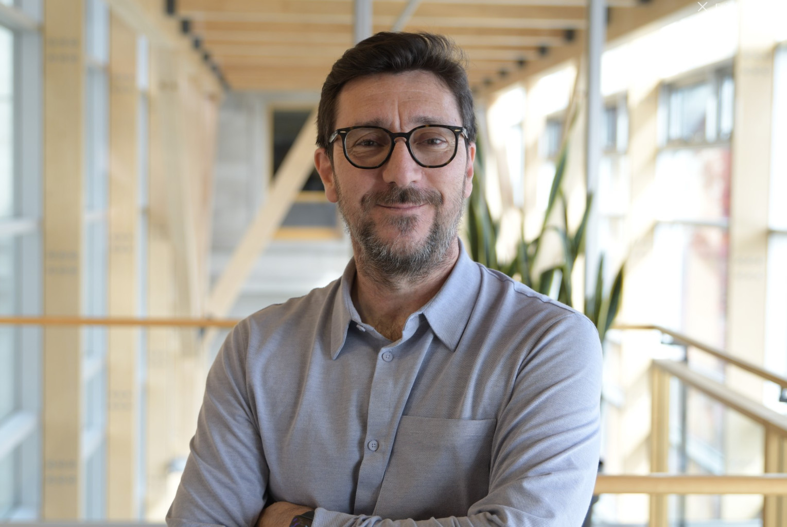

Data and data science play key role in informed decision-making for various businesses. 3D location data and 3D data analysis add more advantages for identification of problems, patterns and trends by location and time to make smarter decisions for our cities. Smart cities get benefits from data, data science, location data and analytics to provide accurate information for better decision making at local and regional scale. Sensing technologies and real time data collectors are also great tools for collecting different dimensions of data. In a smart cities era, all these data and information require appropriate collaborative and communication technologies for better management and sharing of data and information.
The Smart Data and Smart Cities (SDSC) Conference is an annual international conference that brings together international experts in city analytics, GIS, digital twins, smart cities and data science from leading research institutes to discuss advances in methods and applications. It provides a forum to discuss the use data and technology to plan and shape our future cities. SDSC is the annual conference of the Urban Data Management Society, a society over 40 years old.
This year the 8th annual SDSC conference will be held in Athens, Greece 04-07 June, 2024. This is the first time SDSC conference has come to Greece.
This event seeks to invite cutting edge research, experience, and implementation relevant to city and infrastructure data, analytics, collaborative environments, and platforms for smarter decision making at local, national, and international levels. We encourage scholars and practitioners to share their research and experience relevant to the themes of the conference:
GIS, urban informatics, and smart cities
Sensing technologies, laser scanning and smart cities
BIM and infrastructure
Data science, visualisation and City Analytics
Mobility data and visualisation
Participation and empowerment
Privacy, data security challenges in digital twins and smart cities
Blockchain technology for municipal management
Open data and open urban platforms
Crowdsourcing data collection and analytics
Monitoring systems
Disaster management/warning systems
Application of Artificial Intelligence (AI) and machine learning in smart cities
Drones for monitoring/inspecting cities and construction sites
Smart homes
Realtime/web-based/interactive data visualization
Cities' dashboards
Smart Energy efficiency solutions
Data and analytics for circular economy in cities
BIM/GIS integration and digital twins
Manned Drones
Manned Drones Transportation
Spatio-temporal patterns
Smart cities during and after Covid-19
Big data/big spatial data analysis and management
ICT and smart cities
Smart Transportation
Net zero-emission cities
Conference registration fees
Registration includes
Price
EARLY BIRD REGISTRATION: UNTIL APRIL 30th 2024
Access to workshop
3 day conference proceedings including keynotes, parallel sessions and catering for morning tea, lunch and afternoon tea
Welcome reception drinks, 5th June 2024
Gala dinner, 6th June 2024
€500
REGISTRATION: FROM MAY 1st 2024
Access to workshop
3 day conference proceedings including keynotes, parallel sessions and catering for morning tea, lunch and afternoon tea
Welcome reception drinks, 5th June 2024
Gala dinner, 6th June 2024
€600
PARTICIPANTS WITHOUT PAPERS
Access to workshop
3 day conference proceedings including keynotes, parallel sessions and catering for morning tea, lunch and afternoon tea
Welcome reception drinks, 5th June 2024
Gala dinner, 6th June 2024
€400
ACCOMPANIED PERSONS
Catering for morning tea, lunch and afternoon tea
Welcome reception drinks, 5th June 2024
Gala dinner, 6th June 2024
Registration does not include proceedings and workshops
€400
The Registration Form should be filled and sent to Greek Computer Society (EPY), by email (epy AT epy DOT gr) no later than April 28, 2024. download Registration Form
Payment Method
In order for the registration to be effective, participants have to deposit the registration fee to the Greek Computer Society (EPY), in the following account:
BANK: ALPHA BANK
ACCOUNT HOLDER: Greek Computer Society (EPY)
ACCOUNT NO: 151-00-2002002178
IBAN: GR53 0140 1510 1510 0200 2002 178
Bank expenses are responsibility of the authors.
In the place reserved in the deposit receipt for the “Reasoning of the Payment”:
In case you present a paper, please complete Your full name and the phrase “SDSC 2024, [paper id]”.
(Replace the [paper id] with the number provided in the subject of your acceptance letter)
In case you have not submitted a paper to SDSC, please complete Your full name and the phrase “SDSC 2024".
The deposit receipt should be sent to EPY by email (epy AT epy DOT gr) no later than April 30, 2024.
For participants from Greece and EU only, in case an invoice is to be issued (apart from the Conference Receipt), please fill in and email the Invoice Request Form which is supplied separately. Please note that registration prices do not include VAT 24%. Therefore, only for the case that an invoice is required, the payable amount corresponds to the aforementioned prices, plus 24% VAT. download Invoice Request Form
Dear colleagues, Ladies and Gentlemen,
I hope that I will have the pleasure to welcome one year from now to the 8th Smart Data Smart Cities conference that will be held in Athens Greece, and will be hosted at the University of Western Attica, a University that is constantly rising in the international rankings.
The emblem of our university is the ancient Athenian philosopher Plato, a student of Socrates, a teacher of Aristotle, and the founder of the Academy of the same name. In fact, the archaeological site of Plato’s Academy, also considered the first known ancient university to focus on philosophy, mathematics, science, and politics, is within walking distance of our campuses.
We are delighted to host this International Conference supported by our Department, Surveying and Geoinformatics Engineering, which incorporates a range of scientific fields within its curriculum, including measurement and collection, processing, visualization, management, analysis, and dissemination of geometric, as well as quantitative and qualitative information about the natural and man-made environment, with research procedures and methods, which are part of an innovative technological framework that considers the geographical space and the natural and man-made environment as a result of constant and perpetual interaction of nature and man.
We are ready to provide a forum for the esteemed guests to discuss new approaches and methodologies, examine new technologies applied in smart cities, and share practical experiences in smart data and smart cities.
Combining its contribution to the development of Western scientific thought since ancient times with the famous Greek hospitality, Athens aspires to be added to the list of cities that have already successfully organized this renowned conference.
Dear future participants, at the 8th Smart Data Smart Cities Conference, hoping to see you all in Athens in June 2024, I wish you a big welcome to a pleasant and multicultural temple of science, art, and technology.
We are at your disposal for a successful conference!
The Head of the Department of Surveying & Geoinformatics Engineering
Andreas Tsatsaris, PhD
Professor
Location
The conference will be held at
University of West Attica
ANCIENT OLIVE GROVE CAMPUS
250 Thivon & P. Ralli Str, Egaleo
Postal Code 12241, Athens
Last update: May 10th, 2024, by nnk.
Keynotes
*To be updated
Beniamino Murgante
Beniamino Murgante is a Professor of spatial planning at the School of Engineering of the University of Basilicata.
Quality indicators and publications impact: Scopus: H-Index 32, 2,605 citations, 251 Papers indexed Google Scholar: H-Index 38, 4648 citations, 424 Papers indexed ResearchGate: H-Index 35 Research Interest Score 2,439 Citations 3,568
Director of Laboratory of Urban and Territorial Systems at the University of Basilicata.
He took his Ph.D. in “Sciences and Methods for European Cities and Territory” at the Department of Civil Engineering of the University of Pisa, and he carried out other research in Lyon at the Laboratory for Information System Engineering directed by Robert Laurini.
Coordinator of undergraduate and postgraduate Civil and Environmental Engineering curriculum at the University of Basilicata.
Coordinator of Smart Mobility and Urban Services in Smart Basilicata post-graduate program.
Member of the Editorial Board of many international journals, scientific committees of a lot of national and international conferences, and the scientific council of some national and international organizations.
Editor of “Building Sustainable Cities” section in “Sustainable Communities” Taylor & Francis.
Co-general Chair of the International Conference on Computational Science and Its Applications (ICCSA).
Workshop | Proximity Planning Modelling: Innovations, Trends, and Future Challenges in the "15-Minute City" Model
The 15-minute city concept has recently emerged as a fundamental design paradigm in several urban and spatial policy strategies. Unsurprisingly, the pandemic lockdowns exacerbated this situation by compelling residents to reacquaint themselves with their local surroundings. The reconfiguration of the urban system, encompassing time, space, and activities, with a focus on enhancing the quality of life, urban health, and overall well-being, shows great potential in cities where essential services and destinations such as work, housing, urban facilities, amenities, food, health services, education, culture, and leisure activities are conveniently reachable within a 15- or 30-minute walking, cycling, or public transportation commute. This strategy is essential for resolving daily intricacies, including all actions pertaining to auto-centric regulations, reducing air pollution, noise, and heat island impacts, as well as promoting green spaces and physical activity. To enhance the 15-minute city model, it is helpful to incorporate the following elements: i) Utilise diverse urban methodologies and strategies to plan for proximity. ii) Implement Smart Cities network technologies like digital twins, Internet of Things (IoT), and 6G. iii) Employ configurational analysis techniques to study cities. iv) Utilise computational analyses to model and create sustainable cities. In order to effectively implement the concept of the 15-minute city, it is essential to develop a comprehensive approach that encompasses transportation planning, urban design, and governance. This approach aims to provide well-designed public areas and streets suitable for walking, cycling, and mixeduse projects. The purpose of this session is to encourage discussions on the 15-minute city, focusing on its concept, morphological approach, structure-function models, its computational, analysis, and application in urban planning. This objective is not restricted to these topics.
Keywords: 15-minute city; proximity; street network configuration, computational analysis, urban morphology, urban dynamics, data-driven analysis; digital twins; walkability and cycling
Robert Laurini
Dr. Robert Laurini, Professor Emeritus in Information Technologies
Born in 1947, Robert Laurini (aka Roberto) holds two doctorates, one in 1973, and the other in 1980, both in information technologies awarded by the Claude Bernard University of Lyon, France. He speaks fluently French, English, Italian and Spanish.
Throughout his career, he primarily worked at INSA-Lyon (University of Lyon), eventually achieving the status of a distinguished professor. However, in 1976-77, he spent an entire year as a research associate at the Martin Centre of the University of Cambridge in the United Kingdom. Similarly, in 1986-87, he served as a visiting professor at the University of Maryland, College Park, USA. Between 1995 and 2005, he held a part-time position at IUAV University in Venice, Italy. Since 2011, he has been retired and holds the title of professor emeritus at the Knowledge Systems Institute in Illinois, USA.
During his carrier, he worked overall on computing aspects of geographic information systems, namely spatial data indexing, geometric quality control, geographic database consistency, updating through aerial photos, visual summaries, chorem generation, geographic ontologies, sensor data organization and indexing, etc. His last works have been on geographic knowledge especially targeted to smart cities and territorial intelligence. In total, he supervised or co-supervised 44 PhD students in those domains.
He wrote several books regarding geographic information systems, especially for urban and environmental planning and the last one is “Geographic Knowledge Infrastructure: Applications to Territorial Intelligence and Smart Cities” in 2017. He authored or co-authored more than 250 papers in various journals and conferences.
He was invited to give seminars in many countries, especially in Italy, Morocco, Algeria, Argentina, and Mexico. He was member of PhD committees more than 100 times in 19 countries.
He was president of the ACMGIS steering committee, vice-president of UDMS, European editor of Computers, Environment and Urban Systems, and associate editor of the Journal of Visual Languages and Computing.
In 2009, he founded the NGO “Universitaires Sans Frontières/Academics Without Borders” the scope of which is to help modernize universities in developing countries. In this NGO, he is now in charge of several universities in Latin America, especially for the training of PhD students and young researchers for scientific writing, and for lab heads in the definition and validation of promising novel research lines.
For more details see www.laurini.net/robert
Keynote | ICT-supported Smart City, quo vadis?
In today's landscape, the concept of Smart Cities has become mainstream, with numerous urban centers proudly adopting the label. But what exactly does it entail? In this thought-provoking keynote address, I delve into the multifaceted dimensions of Smart Cities, exploring not only various definitions but also the diverse challenges spanning housing, mobility, education, feeding, commerce, health, industry, security, and public participation. At the heart of this transformation lies the goal of enhancing the quality of life for all citizens. And how do we achieve this? through the seamless integration of information and communication technologies (ICT). From sensor-based Internet of Things (IoT) solutions to cloud management and knowledge extraction and reasoning, these technologies underpin the Smart City vision. Indeed, artificial intelligence emerges as a pivotal player in this approach. Many believe it holds the key to realizing our ultimate aspirations. During this address, I will survey AI potentialities, including knowledge management, case-based reasoning, and deep learning. However, I must also acknowledge the caveats and uncertainties that lie ahead, as the promises and pitfalls of Smart Cities are explored, envisioning a future where technology harmonizes with human well-being and sustainable urban living. The talk will be concluded by the importance of territorial intelligence, combining artificial intelligence and human collective intelligence for more sustainable cities.
Stéphane Roche

Stéphane Roche, Professor of Geomatics Science
Director of the Institute for Environment, Development and Society (Institute EDS)
Laval University, Quebec, Canada Biography: Engineer and geographer by training, Stéphane Roche is a full professor in the Department of Geomatic Sciences of the Faculty of Forestry, Geography (FFGG) and Geomatics at Laval University (Quebec, Canada). He was previously the director of the Department of Geomatic Sciences from 2007 to 2011; vice-dean for research and studies of the FFGG from 2014 to 2018; director of research and academic affairs (vice-rector) at the National Institute of Scientific Research - INRS from 2018 to 2020. During the 2022-2023 academic year, he was a guest professor and head of the center for studies and research on urban environments at the French University of Ontario (UOF) in Toronto. He is currently the director of the Institute of Environment, Development and Society (EDS) at Laval University.
As a professor, Prof. Roche explores the complexity of the spatial organization modes of human societies and the issues raised by the digital transition in Anthropocene urban ecosystems. He is interested in skills and spatial reasoning as the main source of a new form of urban intelligence for climate action and sustainable health. He is the author of five books, 30 book chapters, nearly 200 peer-reviewed scientific publications, and has given 300 conferences, more than half of which are by invitation. He is currently leading Urbi-GES, a $3.7millions CD$ research project that aims at designing and developing an urban intelligence platform for monitoring community GHG emissions in Canadian cities.
Keynote | From Smart City to Healthy City
Since the first Smart City initiatives, mainly pushed by the largest information technology companies, techno-solutionist approaches have largely demonstrated their ineffectiveness in responding to the challenges faced by contemporary urban environments. One response to these limitations is the concept of a healthy city, a quite new approach promoted by the World Health Organization. A healthy city is a progressive, inclusive, connected city where people live in accessible, complete neighbourhoods, can move about freely, connect with nature and feel a sense of belonging. This conference proposes to analyze, based on some current research projects, the role that geospatial intelligence can play in the deployment of Healthy Cities.
Alenka Poplin
Alenka Poplin, Associate Professor of Geoinformation Science at Iowa State University Biography: Alenka Poplin is an Associate Professor of Geoinformation Science at Iowa State University and a founder and director of the GeoGames Lab and Community Engagement Living Lab (https://www.communityengagementll.net/). Her research interests intersect geogames for community engagement, game-based modeling and design, geogames and artificial intelligence, and mapping emotions and places. Her main application areas include smart cities, public participation in urban planning, and online games. She holds a PhD in Geoinformation Science from Vienna University of Technology, a Master of Business Administration (MBA) from Clemson University, SC, and a Master in Surveying and Spatial Planning from the University of Ljubljana, Slovenia. Alenka widely publishes on geogames and mapping emotions and places. She is one of the co-editors of the book The Virtual and The Real: Perspectives, Practices and Applications for The Built Environment, Routledge. Alenka also co-edited, in collaboration with Assoc. Prof. Dr. Dabid Schwartz (Rochester Institute of Technology), the first open-access journal Gaming and Geospatial Information (https://www.mdpi.com/journal/ijgi/special_issues/Gaming_Geospatial_Information). Currently she serves as an editor of the Special Issue of Sustainability Journal titled Co-creating the Future of Cities with Games: New Technologies and Methods for Sustainable and Smart City Planning.
Keynote | Cities for All: Geogames, Artificial Intelligence, Disabled-Accessibility and Evocative Places
This talk explores the notion of “cities for all”. What does it mean to create inviting and happy cities that take everyone’s needs into consideration? How can novel technologies and concepts help create cities for all and in particular for those that are disadvantaged and marginalized? Geogames can be introduced in community engagement processes specifically developed for the targeted audience and enhanced with artificial intelligence capabilities. Novel applications and technological advancements can better support people with disabilities, enabling them better access to the services. Places that evoke positive emotions, images and memories can be designed and implemented. This talk inspires discussions about emotions, places and technological advancements created to improve the quality of life for all citizens.
Workshop | Game Design: Creating Serious Games for Sustainable Futures
This workshop takes the participants into the role of a game designer. It walks the participants through the process of designing and creating a serious game. Theory on games, types of games, game elements, and mechanics of games are combined with practical exercises. Participants work in groups and get immersed in a step-by-step process of creating their own serious game. The process starts with brainstorming and the creation of ideas. It continues with the selection of game elements and the development of a first game prototype. The workshop concludes with group presentations of the game prototypes created during the workshop.
Embarking on a journey to the picturesque island of Poros, nestled in the shimmering Saronic Gulf, is akin to stepping into a Greek postcard brought to life. As the ferry glides across the cerulean waters, the captivating sight of Poros emerges, with its lush greenery cascading down hillsides and quaint white-washed buildings adorning the coastline. Upon arrival, the island's charm unfolds with every step; wander through narrow cobblestone streets lined with bougainvillea-draped tavernas, where the tantalizing scent of freshly grilled seafood fills the air. Visitors can explore historical gems like the 18th-century Clock Tower, offering panoramic vistas of the azure sea, or unwind on pristine beaches such as Love Bay, where crystalline waters invite leisurely swims and moments of tranquility.
Beyond its scenic allure, Poros beckons travelers to delve into its rich cultural tapestry and vibrant atmosphere. Meander through bustling markets brimming with local crafts and delicacies, or partake in traditional Greek dance performances under the starlit sky. Indulge in authentic Greek cuisine at waterfront eateries, savoring delectable dishes infused with the flavors of the Mediterranean. Whether navigating the island's idyllic coastline by kayak, immersing in its storied past at the Archaeological Museum, or simply relishing the unhurried pace of island life, Poros casts a spell that lingers long after the journey's end, a testament to the enduring allure of Greece's island treasures.
Cost
The cost of excursion is additional - It is not included in the registration fees. The cost includes only the ticket price and the price is 70€.
Time table:
Departure time from Piraeus 08:30 (duration 1h)
Departure time from Poros 17:10 (duration 1h)
Register:(after May 17) & Pay on Conference Desk
Publication Pathway 1 – Abstract paper submission
6-8 pages
Extended abstract (1000w), New Final Deadline: 10th March 2024
Author notification: (according the submission extension) it is extended to 31st March 2024
Camera ready / Final submission: 15th April 2024 (see tab "Proceedings" for details)
Consider:
Paper to be accepted on abstract review
To be published in ISPRS archives
Publication pathway 2 – Full paper submission
6-8 pages
Full paper, New Final Deadline: 10th March 2024
Author notification: (according the submission extension) it is extended to 10th April 2024
Camera ready / Final submission: 19th April 2024 (see tab "Proceedings" for details)
Consider:
Paper to be accepted on full paper review
No abstract submission required in advance
To be published in ISPRS annals
Awards
This event will recognise the high quality presentations and papers by sponsoring the following awards:
3 Best papers awards
3 Best oral presentation
8 Thematic awards - one for each Thematic area
How to submit
Papers are submitted via Easychair.
Paper must be prepared following strictly the ISPRS template for abstract and full paper:
Call for papers
The world has experienced tremendous challenges and undergone significant socio-technological transitions in recent years. This in turn has made data-driven technologies such as distributed systems, data analytics and digital platforms increasingly relevant to both the private and public sector, as well as researchers. These emerging digital paradigms - such as Artificial Intelligence (AI) and Machine Learning (ML), Big Data and Digital Twin applications - are particularly critical to the management of Smart Cities.
A Smart City is defined as a set of instruments across many scales that are connected through multiple networks and provide continuous data regarding people and environment in support of decisions about the physical and social form of the city. This process cannot be completed without technology advancements. Moreover a Smart City cannot be established without involving citizens (smart people).
The 8th International Smart Data and Smart Cities (SDSC) Conference will be organised in Athens, Greece, from the 4th to the 7th June 2024. SDSC is a leading international conference focussed on the dissemination and exchange of knowledge and research results relating to urban innovation and smart technologies across the EU, North and South America and Australasia. It is initiated by the Urban Data Management Society (UDMS). With each conference, we strengthen the communication between senior researchers, students, developers, practitioners and citizens and establish collaborations on new research topics.
The conference is organised under the auspices of the International Society of Photogrammetry and Remote sensing (ISPRS) and will comprise technical and scientific presentations along with a series of pre-conference workshops. We seek original contributions on all aspects of the following themes and related topics:
Theme 1: Smart Data
Sensor network databases
On-the-fly data mining
Geographic and urban knowledge modelling and engine
Urban data analytics and big data
Big databases and data management (noSQL)
Open urban platforms
Cyber-Security
Privacy and urban resilience
Data privacy and integrity
Future Internet 5G/6G
Theme 2: Smart People
Volunteered information
Citizen engagement
Participation and empowerment
Privacy and data security challenges in smart cities
Usability of Smart Systems
Co-Design
Theme 3: Smart Cities
Urban Digital Twins
3D modelling of cities
Internet of Things
Urban social networks
Monitoring systems
Smart Homes
Smart Energy
Urban knowledge engineering
New style of urban decision-making systems
Disaster management systems
Industry 4.0
Theme 4: Smart Digital Planning Tools
Metaverse
Scenario planning
Urban modelling and simulation
Urban AI and ML
Urban computational design
Digital platforms and portals
SaaS (Service as a Software) Artificial Intelligence
Plantech & Proptech
Visualisation
Dashboards
Theme 5: Smart Governance
Smart city policy
Smart urban governance
Rules as code
Standards and regulations
Smart engagement - Co-design, co-production
Living labs methods and case studies
Participatory geographical information systems
People as sensors
Theme 6: Smart Green
Net-zero emission cities
COP26 Goals
Sustainable and Green Computing
Environment-friendly system
Green computing
Ecosystems
Green buildings
Theme 7: Smart Construction
Smart construction equipment & machinery
Automated building systems
Construction site planning, monitoring and control
Smart building solutions
Digital technologies used in health and safety management
Theme 8: Smart Urban Mobility
Smart Aerial Mobility
Smart Transportation
Intelligent Transport Systems
Electric Vertical Take-Off and Landing aircrafts (eVTOL)
Voloports
Instructions for Authors
Extended Abstract: there is no template for the 1000 word paper. Accepted 1000 word abstracts have the option to submit a full paper, which will be published in the ISPRS archives without re-review. Papers for the Archives are limited to 8 pages
Full paper: accepted full papers will be published in the ISPRS Annals. These submissions are limited to 8 pages. All full paper submissions will be refereed in a double-blind peer review process for quality, originality, and relevance by the scientific committee. Papers not accepted for ISPRS Annals might be considered for the ISPRS Archives.
** Note that full papers submitted for double-blind peer review to the ISPRS Annals must not contain any information which makes it possible to identify the authors. In particular, names and affiliations must be removed from the manuscript submitted for review. If you would like your paper to be considered for the Annals, please make sure to remove any identifying information before submission. If this is not the case, then your paper will be considered for the ISPRS Archives **
Proceedings
ISPRS Archives (Publication Pathway 1)
Publishing agreement/consent ONE author of each accepted paper to appear in ISPRS Archives (Publication Pathway 1) should submit the publishing agreement/consent for this paper, according to the following instruction notes.
Instruction notes for submitting the publishing agreement with Copernicus GmbH (publisher):
In order to be able to submit the web form, it is necessary to have registered a Copernicus user account:
- If your email address is already registered at Copernicus and you don't have an account number or password, please use the "Forgot your password" function below the Log in button.
- Otherwise, please create a new account at: https://administrator.copernicus.org/createAccount/ (or by using the "Create account" link below the Log in button).
If you are not already logged in to your account, the web form URL is redirected and lands on the login page: please login with your Copernicus User ID/password. You will then be redirected to the publishing agreement form.
Please select the Volume "ISPRS WG IV/9 - 8th International Conference on Smart Data and Smart Cities (SDSC2024)", enter the required metadata (including all co-authors), read and confirm the terms & conditions, and submit the form.
Since it is sometimes asked/unclear: “Affiliation code” is not meant in the sense of a registered “institutional code”, but as simple numerals, attributing the affiliation(s) entered below the author names to the author (analogical to the usage in the paper).
“First name(s)” will be abbreviated to initials in the articles’ citation information.
Schema:
First name | Last name | Email | 1
First name | Last name | Email | 2
First name | Last name | Email | 1,3
1 | Department A, Institute A, City, Country
2 | Department B, Institute B, City, Country
3 | Department C, Institute C, City, Country
---
Additional remark for all (co-)authors regarding ORCID iD and Copernicus user accounts:
We encourage the registration and use of ORCID. If authors have already registered with ORCID and would like to have their iD displayed together with their name on the article website(s), the ORCID registration can be connected to the Copernicus user account in the personal data set. The email address in published paper(s) (PDF/provided metadata) has to meet the/one of the email address(es) saved in the personal data set in order to display the iD icon.
The link to the Copernicus user account log in is:
https://administrator.copernicus.org/authentication.php
If your email address is already registered at Copernicus and you don't have an account number or password, please use the "Forgot your password" function below the Log in button.
Otherwise, in order to create a Copernicus user, please use the "Create account" link below the Log in button.
Camera ready
Each accepted paper to appear in ISPRS Archives (Publication Pathway 1) should be uploaded to EasyChair (menu: ISPRS archives / Publication Pathway 1) as a non-blind pdf file, prepared using the ISPRS template (For the template, go to tab "Papers" of this web site, and press the button "Access template here").
Uploading of Camera ready will be available from April 9 until April 15th, 2024.
ISPRS Annals (Publication Pathway 2)
Publishing agreement/consent ONE author of each accepted paper to appear in ISPRS Annals (Publication Pathway 2) should submit the publishing agreement/consent for this paper, according to the following instruction notes.
Instruction notes for submitting the publishing agreement with Copernicus GmbH (publisher):
In order to be able to submit the web form, it is necessary to have registered a Copernicus user account:
- If your email address is already registered at Copernicus and you don't have an account number or password, please use the "Forgot your password" function below the Log in button.
- Otherwise, please create a new account at: https://administrator.copernicus.org/createAccount/ (or by using the "Create account" link below the Log in button).
If you are not already logged in to your account, the web form URL is redirected and lands on the login page: please login with your Copernicus User ID/password. You will then be redirected to the publishing agreement form.
Please select the Volume "ISPRS WG IV/9 - 8th International Conference on Smart Data and Smart Cities (SDSC2024)", enter the required metadata (including all co-authors), read and confirm the terms & conditions, and submit the form.
Since it is sometimes asked/unclear: “Affiliation code” is not meant in the sense of a registered “institutional code”, but as simple numerals, attributing the affiliation(s) entered below the author names to the author (analogical to the usage in the paper).
“First name(s)” will be abbreviated to initials in the articles’ citation information.
Schema:
First name | Last name | Email | 1
First name | Last name | Email | 2
First name | Last name | Email | 1,3
1 | Department A, Institute A, City, Country
2 | Department B, Institute B, City, Country
3 | Department C, Institute C, City, Country
---
Additional remark for all (co-)authors regarding ORCID iD and Copernicus user accounts:
We encourage the registration and use of ORCID. If authors have already registered with ORCID and would like to have their iD displayed together with their name on the article website(s), the ORCID registration can be connected to the Copernicus user account in the personal data set. The email address in published paper(s) (PDF/provided metadata) has to meet the/one of the email address(es) saved in the personal data set in order to display the iD icon.
The link to the Copernicus user account log in is:
https://administrator.copernicus.org/authentication.php
If your email address is already registered at Copernicus and you don't have an account number or password, please use the "Forgot your password" function below the Log in button.
Otherwise, in order to create a Copernicus user, please use the "Create account" link below the Log in button.
Camera ready
Each accepted paper to appear in ISPRS Annals (Publication Pathway 2) should be uploaded to EasyChair (menu: ISPRS annals / Publication Pathway 2) as a non-blind pdf file, prepared using the ISPRS template (For the template, go to tab "Papers" of this web site, and press the button "Access template here").
Uploading of Camera ready will be available from April 12 until April 19th, 2024.
Committees
General Co-Chairs
Name
Surname
Affiliation
Dimos
Pantazis
University of West Attica
Ioannis
Voyiatzis
University of West Attica
Volker
Coors
HFT Stuttgart
Program Committee Co-Chairs
Name
Surname
Affiliation
Nikitas
Karanikolas
University of West Attica
Claire
Ellul
University College London
Michael
Vassilakopoulos
University of Thessaly
Program Committee Members
Name
Surname
Affiliation
Alias
Abdul-Rahman
Universiti Teknologi Malaysia
Giorgio
Agugiaro
Delft University of Technology
Theodoros
Anagnostopoulos
University of West Attica
Leonidas
Anthopoulos
University of Thessaly
Ken
Arroyo Ohori
Delft University of Technology
John
Barton
The University of New South Wales
Martina
Baucic
FGAG
Filip
Biljecki
National University of Singapore
Roland
Billen
University of Liege
Lars
Bodum
Aalborg University
Pawel
Boguslawski
Wroclaw University of Environmental and Life Sciences
Maria Antonia
Brovelli
Politecnico Di Milano
Matteo
Caglioni
UMR 7300 ESPACE - Université Nice Sophia Antipolis
Olga
Cavoura
University of West Attica
Ofelia
Cervantes
Depto. Computación, Electrónica y Mecatrónica
Eliseo
Clementini
University of L'Aquila
Aspassia
Daskalopulu
University of Thessaly
Jose-Paulo
de Almeida
INESC Coimbra
Youness
Dehbi
HafenCity University Hamburg
Mahmoud Reza
Delavar
University of Tehran
Abdoulaye Abou
Diakité
Delft University of Technology
Matt
Duckham
RMIT
Cidália Costa
Fonte
University of Coimbra
Jorge
Gil
Chalmers University of Technology
Gilles
Gesquiere
LIRIS
Tarun
Ghawana
Integrated Spatial Analytics Consultants
Eric
Guilbert
Université Laval
Petra
Helmholz
Curtin University
Stephen
Hirtle
University of Pittsburgh
Ivana
Ivanova
Curtin University
Martin
Kada
TU Berlin
Margatira
Kokla
National Technical University of Athens
Thomas
Kolbe
Technical University of Munich
Shawn
Laffan
UNSW
Robert
Laurini
INSA Lyon
Camilo
León Sánchez
Delft University of Technology
Ki-Joune
Li
Pusan University
Wei
Li
Harbin Engineering University
Liu
Liu
Tongji University
Christina
Mickrenska-Cherneva
UACEG
Marco
Minghini
European Commission - Joint Research Centre
Eftihia
Nathanail
University of Thessaly
Gerhard
Navratil
Technical University Wien
Stephan
Nebiker
University of Applied Sciences and Arts North-western Switzerland


{kind=link}
{kind=link}
{kind=link}
{kind=link}